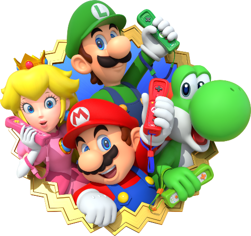

Super Mario Bross
Mario Bross
Es un videojuego de arcade desarrollado por Nintendo en el año 1983. Fue creado por Shigeru Miyamoto. Ha sido presentado como un minijuego en la serie de Super Mario Advance y otros juegos. Mario Bros. ha sido relanzado para Wii, Nintendo 3DS y Wii U en los servicios de Consola Virtual en Japón, Norteamérica, Europa y Australia. Fue la tercera aparición de Mario, y la primera que aparece con su nombre definitivo, ya que en Donkey Kong (1981) aparecía bajo el seudónimo de Jumpman (‘saltador’).
Sus juegos
Mario Tenis
Es un videojuego de la serie Mario, lanzado en el año 2000 para la consola Nintendo 64. En él, todos los personajes juegan tenis. En este videojuego aparece por primera vez Waluigi. Es el segundo videojuego de la saga.
Super Mario 64
Es un videojuego de plataformas de mundo abierto para la videoconsola Nintendo 64, desarrollado por Nintendo Entertainment Analysis and Development y publicado por Nintendo. Fue lanzado en Japón el 23 de junio de 1996, en América del Norte el 29 de septiembre de 1996 y en Europa el 1 de marzo de 1997.

Mario Kart
Es una serie de videojuegos de carreras desarrollados y distribuidos por Nintendo como spin-offs de su marca registrada Super Mario y cuentan con la aparición de los personajes de la franquicia de Mario. El primer juego de la serie, Super Mario Kart, fue lanzado en 1992.